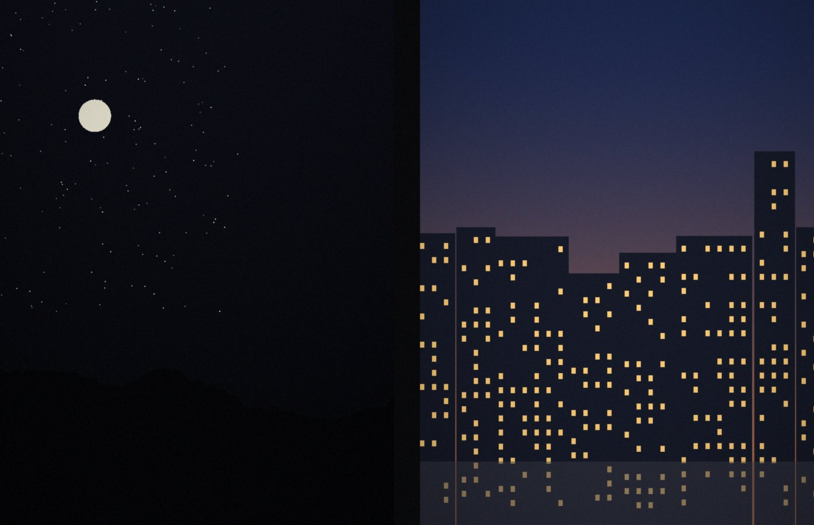

Lightroom Classic plug-in · half-frame 35mm
Half-Frame Splitter
Your half-frame scans show two pictures side by side with a black line between them. This plug-in finds the line and gives you each picture as its own photo, without touching the original.
The original stays untouched
Each half is a virtual copy. Your scan file and its own edits never change, and nothing is ever deleted.
No quality loss
A virtual copy is only a crop instruction. Lightroom always works from the full-resolution original.
Nothing to import
The two halves appear right away, stacked with the original scan.
Runs only on your Mac
No cloud, no account, no extra software. It uses Lightroom and a tool built into macOS.
About one minute
Install
You need Lightroom Classic on a Mac. You don't need to install anything else.
-
Download and unzip
Download the ZIP and double-click it. You get a folder called
Photo-cutter--main. -
Open Lightroom’s plug-in folder
In Finder choose (Shift-Cmd-G), paste this path and press Return:
~/Library/Application Support/Adobe/Lightroom/ModulesIf Finder says the folder doesn’t exist, go to
~/Library/Application Support/Adobe/Lightroominstead and make a new folder there namedModules. -
Drag the plug-in in
Drag
HalfFrameSplitter.lrpluginfrom the unzipped folder intoModules. -
Restart Lightroom Classic
Lightroom loads everything in
Modulesby itself. To check, open : Half-Frame Splitter should be listed as installed and running.
Prefer Terminal? If you unzipped the download in your Downloads folder, this does steps 2 and 3 for you:
bash ~/Downloads/Photo-cutter--main/scripts/install.sh
Lightroom updates don’t touch the Modules folder, so the plug-in keeps working after you update Lightroom.
Every roll
Use
-
Select your pair scans
In the Library, select the scans you want to split. A whole roll at once is fine.
-
Open the plug-in
Choose
In the Develop module it is under .
-
Click Split
Each scan gets two virtual copies, Half 1 and Half 2, stacked with it. Half 1 is the left picture, or the top one if the pair is stacked. A summary lists anything that was skipped.
Options in the window
Fine-tune a cut
Select the half, press R for the Crop tool and drag the edge, like any other crop.
Run it again
Scans that already have halves are skipped. To redo one, select its two halves and choose . That removes only the copies.
Need real files?
Select the halves and use . A 16-bit TIFF is lossless. Tick Add to This Catalog to keep the files in Lightroom too.
Night frames, blank frames, overlaps
When it can’t see the line
On film, the gap between two frames is unexposed. It scans exactly as black as the deepest shadows in a picture. Next to a dark night frame, the plug-in can’t tell where the picture stops and the gap begins. Instead of guessing silently, it shows you the scan and asks.
I can’t see the dividing line clearly in “roll12_07.tif” (1 of 2 unclear).
Reason: one picture is too dark next to the dividing line to see where it starts.
How should I cut it?

What you can do
- Move the red line with the slider. The preview redraws as you drag, turned the way Lightroom shows the photo.
- My best guess puts it back where the plug-in thinks the line is. Its edge next to the brighter picture is usually exact.
- Middle puts the cut at 50%.
- Don’t cut it leaves the scan as it is and puts it in the collection Half-Frame Splitter › Needs review.
- On a big batch, tick the box to stop asking. The rest are cut at the best guess and go into Needs review.
- Cancel all stops the whole run. Nothing is changed.
The plug-in asks only after it has checked every scan, so you answer all the questions at the end instead of being interrupted. Scans you cut yourself don’t go into Needs review.
In theory
How it works
What happens, step by step, after you click Split.
-
A small preview is made
The built-in macOS tool
sipsreads the scan and writes a temporary preview, 1200 pixels on the long side. Your file is only read, never written. The preview is deleted afterwards. -
Every column is measured
For each column of pixels, the plug-in notes how bright its brightest 10% are. In a picture, almost every column has something bright in it somewhere. In the gap between the frames, the whole column is black from top to bottom, so the measurement drops sharply.
-
The line is checked
The darkest dip near the middle counts only if it is dark enough, about as wide as a frame gap (0.3% to 15% of the width), between 30% and 70% across, has a picture on both sides, and is the only one. A second pass looks at the brightest 25% instead, so a light leak over part of the gap doesn’t hide it.
-
The halves are made
Lightroom makes two virtual copies of the scan and the plug-in sets each one’s crop, cutting where the dip crosses the halfway level. Scans that fail a check are handled the way you chose: asked, guessed or skipped.
Horizontal and vertical splits
The usual case. Two upright frames side by side, the line runs top to bottom.
A pair scanned turned on its side. The line runs across.
There’s nothing to set. The plug-in looks for the line across the short side of the scan, which is where it is on a half-frame pair. On nearly square scans it tries both directions and uses the clearer line. Photos rotated in Lightroom, or by Preview or a scanner, are handled too.
Why there’s no quality loss
A virtual copy is a set of edit instructions stored in your catalog. No pixels are copied and nothing is re-compressed. When you view, edit or export a half, Lightroom renders it from the original file at full resolution, exactly like a crop you made by hand.
The 1200-pixel preview is only used to find the line. It never ends up in your photos. The only place quality can change is a later JPEG export, the same as for any photo. A 16-bit TIFF export is lossless.
| Photo | Pixels | Source |
|---|---|---|
| Original scan | 6000 × 4000 | file on disk |
| Half 1 | ≈ 2900 × 4000 | same file |
| Half 2 | ≈ 2900 × 4000 | same file |
Updating, removing and help
Update to a new version
Download the new ZIP, replace HalfFrameSplitter.lrplugin in the Modules folder, and restart Lightroom. Or run the Terminal command from the install guide again.
Your settings and every half you already made are kept.
Remove the plug-in
Quit Lightroom, delete HalfFrameSplitter.lrplugin from the Modules folder and start Lightroom again.
Your photos stay as they are. The halves are ordinary virtual copies and don’t need the plug-in.
The menu item is missing
Open and check that Half-Frame Splitter is listed as installed and running.
If you once added the plug-in from another folder with the Add button, remove that entry. Two copies of the same plug-in conflict.
“Could not select it in the current view”
The plug-in has to select each photo to make its copies. Turn off the Library filter or expand the stack, then run it again.
“The file is missing or its drive is not connected”
Connect the drive that holds the scans, then run it again.
Where is the log?
The plug-in writes HalfFrameSplitter.log to Documents/LrClassicLogs (older Lightroom versions: Documents/lrClassicLogs). It lists what was found in every scan, so it’s the first place to look if a result surprises you.